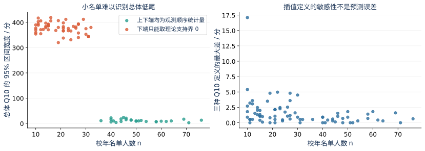
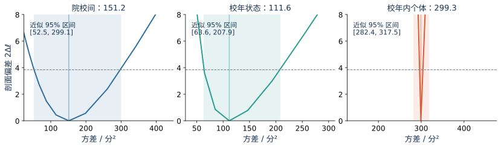
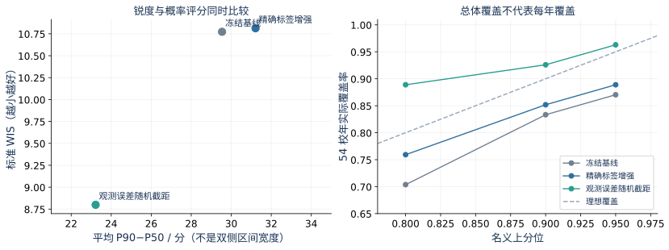
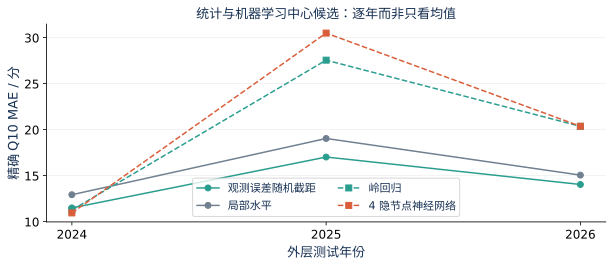
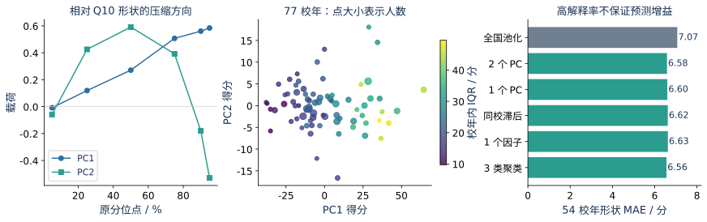
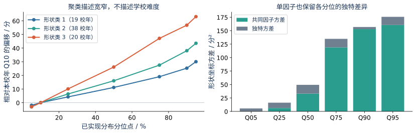
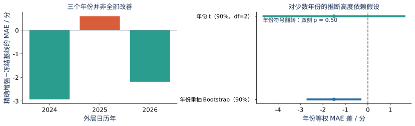

“精确标签仍有抽样误差”需要限定统计对象。若某校某年目标人群的名单完整、录取类型正确且分数读取无误，则经验分布 \(F^{adm}_{s,t}\) 是该届已实现有限总体的完整记录；给定名单后，其经验 Q10 是可直接计算的函数，并不存在因随机抽样而产生的标签误差。OCR、名单漏页、人口口径和学院聚合错误属于观测或覆盖误差，不能用重抽样自动修复。本文所谓“精确”首先指审计通过名单覆盖范围内的经验分位数，不表示已取得每所学校官方完整原件。
如果另设假想的、可重复产生拟录取者的选择总体分布 \(H^{adm}_{s,t}\)，其分位数 \(\theta_{s,t}=Q_{0.10}(H^{adm}_{s,t})\) 才有总体推断含义。把本届名单看成该总体的独立同分布样本是额外工作假设；实际招生有排名、名额和复试选择约束，独立同分布不由公开名单本身保证。Bootstrap 标准差在此描述重复届次的低尾波动近似，而不是完整名单标签的读取置信度。最终任务仍是预测下一届已实现 Q10，而非把潜在总体分位数置信区间直接当作下一年预测区间。
| 对象 | 已知/未知 | 恰当的不确定性 |
|---|---|---|
| 本届完整名单的经验 \(T_{s,t}\) | 名单正确完整时可计算 | 读取、覆盖和定义差异；不是条件抽样误差 |
| 假想选择总体的 \(\theta_{s,t}\) | 模型中的未知参数 | 依赖独立性假设的顺序统计区间与 Bootstrap |
| 报名前下一届 \(T_{s,t+1}\) | 未来随机结果 | 状态、公共年份、未来队列与模型参数不确定性 |
经验分位数采用 Hyndman-Fan 第 7 类线性插值[23]。对升序分数 \(A_{(1)},\ldots,A_{(n)}\)，令 \(r=1+(n-1)p\)、\(j=\lfloor r\rfloor\)、\(g=r-j\)，则：
端点按样本最小值、最大值处理。定义敏感性比较第 1 类经验逆分布、第 7 类线性插值及第 8 类中位数无偏插值，并比较 Q05、Q10、Q15、Q20 的排序。对于假想连续独立同分布总体，令 \(B\sim\operatorname{Binomial}(n,p)\)，取 \(l=F_B^{-1}(0.025)\)、\(u=F_B^{-1}(0.975)+1\)，可构造总体分位数区间：
若 \(l=0\) 或 \(u=n+1\)，分别用总分理论支持界 0、500 替代[18,25]，并显式标注该端点没有样本支持；离散分数和并列通常使该构造更保守。这里的 0 不表示现实中可能以 0 分录取，而说明小名单不足以用该非参数假设识别总体低尾下界。该区间既不是下一年 Q10 的预测区间，也不是个人最终录取区间。
为将描述性方差分解推进到模型化估计，针对精确层 77 个校年建立带共同年份固定效应的三层高斯工作模型：
各随机项在模型中独立。\(a_s\) 表示持久院校差异，\(u_{s,t}\) 表示共同年份效应以外的校年变化，\(e_{i,s,t}\) 表示同届个体离散性。该模型针对拟录取选择后的分布，不能推断全体报名者能力，更不能把学校随机效应解释为学校造成的分数提升。以年份固定效应条件化也不同于把未知年份冲击视为零。
估计采用限制最大似然（REML）[22]。对每个校年保存人数 \(n_{s,t}\)、均值 \(\bar A_{s,t}\) 及组内平方和 \(S_{s,t}\)，它们在该高斯模型下保留逐人似然的充分信息；因此公开层不需要披露个人记录。令 \(K\) 为校年数，\(N\) 为总人数，\(X\) 为年份设计矩阵，\(p_X\) 为其列数，\(Z\) 为学校归属矩阵，则校年均值协方差与忽略常数的限制对数似然为：
组内平方和为 \(S_{s,t}=(n_{s,t}-1)s_{s,t}^2\)，不能在仅拟合组均值时遗漏；否则校年内信息会被浪费。代码测试核对了上述充分统计量似然与直接逐人协方差似然仅相差参数无关常数。方差在对数尺度数值优化；固定某一方差、重新优化其余方差，使用 \(2(\ell_{R,\max}-\ell_R)\le\chi^2_{1,0.95}\) 给出近似剖面区间。小样本、边界和工作正态性均限制该区间的解释，且不能对不同固定效应设计的 REML 值直接作似然比检验。
同校不同年份的相关系数为 \(\sigma_a^2/(\sigma_a^2+\sigma_u^2+\sigma_e^2)\)，同校同年的相关系数为 \((\sigma_a^2+\sigma_u^2)/(\sigma_a^2+\sigma_u^2+\sigma_e^2)\)。该量说明组内依赖，而不是预测精度。本节对逐人成绩的方差估计与下节对 Q10 的状态预测是两个相连但不相同的模型，不能直接把个体分数方差当作 Q10 预测方差。
令 \(m_{s,t}=\theta_{s,t}-L_{z_s,t}\) 为潜在选择总体 Q10 的国家线边际。经验精确分位数与代理分位数都围绕这一潜在状态形成观测，但二者的误差结构不同：
其中 \(b_h\) 为“精确−代理”的方法偏差。每个预测原点只用更早年份的精确—代理配对估计 \(b_h\) 和差异方差；至少有 5 个配对、来自至少 3 所学校时才作经验估计，否则保持偏差 0、代理差异标准差 10 分的工作默认值。精确观测方差取此前已计算的队列 Bootstrap 方差，下限 0.25 分²；代理观测方差取训练窗精确队列方差中位数加方法差异方差。已有精确标签时，配对代理仅用于方法校准，绝不作为第二条独立目标观测重复训练。
这里存在识别限制：精确—代理差异可能与 Bootstrap 队列波动相关，二者方差相加属于暂定近似，不是已证明独立；默认值也不是数据估计。该层把质量信息显式表达为观测精度，但并未完全解决覆盖偏差。软证据、状态未知记录仍保留既有敏感性与描述角色，不被强制转换为精确标签。
比较两个状态结构。简约模型为 \(m_{s,t}=\mu+a_s+v_{s,t}\)，其中学校随机截距共享 \(\tau_a^2\)，独立校年创新共享 \(q^2\)。动态候选则设：
第二个模型是局部水平随机过程[24]，其时间协方差为 \(q^2\min(t-t_0,r-t_0)\)。与独立创新模型相比，它允许同校状态沿时间延续，但在短面板中也可能把单年噪声持续传播。另拟合同精度动态模型作为消融，将所有观测方差替换为训练窗中位数。模型的学校方差、创新方差及总体位置均在外层训练窗用 REML 估计；这是真正的共享方差部分池化，但采用经验贝叶斯插件估计，而不是超参数也被积分的完整贝叶斯后验。
设某校历史观测向量为 \(y_s\)，其协方差为 \(V_s\)，未来状态与历史观测的协方差向量为 \(c_s\)，未来先验方差为 \(v_*\)，则条件预测为：
未来队列项使用同校最近一期精确 Bootstrap 方差；没有同校精确历史时用训练窗中位数，不能读取测试年人数或 Bootstrap。国家线位置继续采用过去一年与近五年均值的 0.55/0.45 组合，波动只从更早一步预测残差估计并设置 7 分标准差下限。三个方差相加要求公共年份与边际冲击近似独立；超参数估计、方法偏差估计和重大结构事件尚未全部积分。因此本候选不再额外叠加已有最终残差安全垫，以避免同一误差被重复计入；但也不能声称其已穷尽全部风险。
现代统计建模并不排斥机器学习。为比较共享部分池化与跨校函数学习，另用七个严格历史特征：最近边际、中位边际、最近变化、历史标准差、历史数量、最近观测年龄及年份。没有同校历史时以当时全国历史中位边际填补，同时保留数量与年龄信息；不能用当前或未来标签计算特征。
岭回归[2]的 \(\lambda\in\{1,10,100\}\) 仅在外层训练窗内以最近一个已揭示年份的精确标签验证选择；可验证年份不足时固定为 10。内层也重新校准代理偏差、重建历史特征与标准化，不能把外层已经吸收验证年信息的观测误差参数直接交给内层。外层拟合完毕后，测试年只使用更早成绩。特征标准化只拟合训练集。
神经网络采用单隐层前馈结构[27]，设 4 个双曲正切节点，结构为 \(f(x)=c+\sum_{j=1}^{4}v_j\tanh(w_j^{\mathsf T}x+b_j)\)。输入与目标在训练窗标准化，使用同一观测精度权重、L2 参数 10、L-BFGS 优化与固定种子。该小型结构是受短面板约束的非线性候选，不代表对深度学习模型类别的全面检验。两类候选仅检验中心 MAE；未经概率校准，不能人为为其附上“90%”上界。新增模型族是知晓旧结果后的回溯比较，而非预注册盲测。
把校年分布形状写成六维向量 \(h_{s,t}=(Q_{05},Q_{25},Q_{50},Q_{75},Q_{90},Q_{95})-Q_{10}\mathbf1\)。删除恒为零的 Q10 坐标避免退化；各坐标都以分为单位，只作列中心化，不作单位方差标准化。该研究对象是拟录取分布的相对展开，不是未来 Q10 的预测分布。
主成分分析[26]保留 1 或 2 个方向；单因子分析采用 \(h=\bar h+\Lambda_f f+\epsilon\)，其中 \(f\sim N(0,1)\)、\(\epsilon\sim N(0,\operatorname{diag}\psi)\)，允许不同分位坐标有独特噪声；K-means 将过去形状划分为 3 类，类数为探索性设定，而非“存在三种天然院校类型”的结论。因子与主成分的符号均可整体翻转，不能赋予符号本身政策含义。
全部 77 校年的主成分、因子与聚类只用于描述。时间外形状比较另在每个原点重拟合基底、因子与聚类中心：用上一期同校形状的降维重构或所属类中心，与训练窗全国中位形状收缩；权重取 \(\min\{n/(n+30),0.75\}\exp[-0.35(\text{年龄}-1)]\)。没有同校历史则回退全国形状。测试年 Q10 只用于把真实测试分布变为相对形状并评分，不参与候选输入。本节六分位、54 校年的形状 MAE 与第 7.7 节七分位、57 校年结果不同口径，不宜直接相减。
模型比较使用如下标准 WIS，\(K_q=3\)，\(\alpha\in\{0.1,0.2,0.4\}\)，\(l_\alpha=q_{\alpha/2}\) 与 \(u_\alpha=q_{1-\alpha/2}\) 表示对应端点：
这里分母为 3.5[14]。冻结基线与精确增强候选的七个分位数均重新用同一程序评分；旧精确标签实验摘要中的未规范化 wis_proxy 不与本节值混用。新增随机截距、局部水平和等精度局部水平的预序选择，要求至少已有两个更早测试原点，并要求过去 WIS 改善至少 0.1 分、任何过去年份 MAE 恶化不超过 2 分；不满足则保留简约随机截距。规则避免测试年残差倒灌，但不抹去研究者在旧结果已知后提出新模型族的选择偏差。
三种 Q10 定义在 77 个精确校年上的极差中位数为 @@DEFINITION_MEDIAN@@ 分，最大为 @@DEFINITION_MAX@@ 分。Q05 与 Q10、Q10 与 Q20 的 Spearman 相关分别为 @@RANK0510@@ 和 @@RANK1020@@，说明当前名单中的整体难度排序对目标分位选择较稳定，但个别小名单的插值差异仍然重要；高相关也不能证明相邻学校的 1 分排序有决策意义。
在总体 Q10 的独立同分布非参数区间中，@@SUPPORT_COUNT@@/77 个校年的下端只能使用理论支持界，反映小样本低尾推断的困难。该结果不是模型发现某校低位成绩可能为 0，也不是完整名单的经验 Q10 不可确定。非参数区间可作为识别诊断，不能直接移植为明年风险上界。

REML 使用 2,312 名考生、44 所学校、77 个校年和 5 个年份固定效应。估计结果如下，剖面区间以分²为单位：
| 分量 | 估计方差 | 近似 95% 剖面区间 | 方差占比 |
|---|
同校不同年份相关为 @@ICC_SCHOOL@@，同校同年相关为 @@ICC_COHORT@@。保留大量个体记录能较精确估计校年内离散性，但院校间与校年状态方差的区间仍宽，符合有效组数和年份数有限的结构。不加年份固定效应时，校年状态方差占比约 31.3%，条件化后约 19.9%；这说明共同年份差异能解释部分变异，但属于工作模型比较，不是国家政策或公共试卷难度的因果分解。
第 3.8 节的 43.0%/10.9%/46.1% 是院校等权的描述性方差分解；本节是高斯逐人似然权重、年份固定效应条件化的随机效应估计。两套比例回答不同问题，差异不应包装成“旧分解计算错了”或“某类差异真实占全国多少”。审计学校并非全国应用统计项目的概率样本，REML 占比也不能直接推广到全部报名者。

所有候选在同一批 54 个精确校年上比较，外层年份 2024、2025、2026 分别含 10、27、17 个校年。样本和真值不变，不能把这组 MAE 与 226 条代理目标的加权 MAE 当作同一指标。
| 模型 | MAE | 标准 WIS | P90 覆盖 | 平均 P90−P50 |
|---|
简约观测误差随机截距的 MAE 为 15.05 分，略高于精确增强模型的 14.90 分；但 WIS 从 10.81 降至 8.80，P90−P50 平均宽度从 31.21 缩至 23.22 分，总体 P90 覆盖从 85.2% 提升至 92.6%。这是本测试集上中心误差、分布评分与锐度之间的取舍，不是所有指标同时改善。其“真实−预测”平均偏差为 -5.24 分，说明位置整体偏高亦有助于上尾覆盖；不能只凭较高覆盖宣布已校准。
分年结果更关键：随机截距候选的 P90 覆盖分别为 90.0%、100.0%、82.4%，2026 年仍低于名义 90%。动态局部水平与等精度消融未改善中心 MAE，预序规则在三个原点均保留简约随机截距。新增状态分布亦没有纳入全部事件先验与超参数不确定性；未满足相对精确增强模型至少改善 0.5 分 MAE 的升级条件。因此保留为概率研究候选，不替换已经独立冻结的 2027 前瞻数值。

岭回归与 4 隐节点网络的中心 MAE 分别为 @@RIDGE_MAE@@ 和 @@NEURAL_MAE@@ 分，均未超过精确标签增强模型。岭参数在 2024 原点固定为 10，在后两原点由更早精确验证年选择为 100；三原点训练分别有 63、134、212 个历史校年，不能以 2,312 名逐人记录宣称年度网络拥有 2,312 个独立训练单位。当前网络已收敛，因而不能简单将差结果解释为“优化程序没跑完”。

负结果仍支持三个有边界的描述：第一，当前七个历史特征的共享回归函数没有稳定优于学校部分池化；第二，放宽非线性并未自动解决年份漂移；第三，数据量增长和位置误差之间不是单调关系。这些是给定特征、损失、正则和结构下的结果，不证明岭回归或神经网络普遍无效，也不确定恶化究竟来自观测精度、非平稳性还是遗漏事件。未进入预测的候选仍可用于检验哪些机制需要更强的数据支持。
全样本 PC1、PC2 分别解释 @@PC1@@%、@@PC2@@% 的相对分位曲线变异，累计约 @@PC12@@%。PC1 与校年内 IQR 的 Spearman 相关为 @@PC1_IQR@@，表明主方向主要描述分布展开程度。PC2 与 Bowley 偏度的相关仅为 @@PC2_SKEW@@，不足以把第二主成分命名为“偏度因子”。此外，解释率依赖所选分位坐标与是否标准化，并不表示未来预测解释率。
| 候选 | 形状 MAE / 分 | 统计角色 |
|---|
两主成分和三类聚类候选相对同校未压缩形状仅有小幅改善；单因子候选未取得额外增益。候选之间差距小于约 0.1 分，不足以在仅三个年份上确认优势，故不自动选择聚类或因子预测器。描述性分析则仍有独立价值：按 Q05−Q95 展开程度排序的三个探索类分别含 @@CLUSTER_COUNTS@@ 个校年，平均展开跨度约为 @@CLUSTER_SPANS@@ 分，主要区分较窄、中等和较宽的拟录取分布。


单因子载荷在中上分位较大、Q05 坐标载荷较弱，提供了“上半部共同展开、低尾尚有独特结构”的描述性线索。但低尾独特方差也可能含小样本分位误差；在未分离这些误差前不能称其为已识别的独立招生机制。不同年份的同一学校可能属于不同形状类，故类标签属于校年而不是学校永久属性。类数 3 未经独立验证，不用于公众网页筛选或招生政策解释。
精确增强模型减冻结基线的分年 MAE 差分别为 -2.93、+0.59、-2.19 分，年份等权差为 -1.51 分。原先按三个已观察年份重抽的 90% Bootstrap 区间为 [-2.68,-0.33]，主要反映这几个年份被重复组合的变化；它不能凭较窄区间证明对未知年份稳定优越。年份只有三个时，常规按校年视为独立的标准误也会低估公共年度依赖。
把三个年份均值作为分析单位，在“年份效应独立、近似正态”的额外假设下，使用自由度 2 的 t 区间，90% 区间为 [@@T_LOW@@,@@T_HIGH@@]，跨过 0；独立、对称年份效应下枚举 \(2^3\) 种符号翻转，双侧 p 为 @@SIGN_P@@。两种假设均难以从三个年份检验，不能把后者包装成更确定的统计结论，也不能把不显著解释为不存在实际增益。

合理结论是“精确标签增强在当前测试集合上改善中心误差，但新年份稳定优越尚未证实”。年度趋势、共同政策冲击和数据可得性偏差都不会被符号翻转或 Bootstrap 自动消除。后续新原点和公开数据时点快照比继续在这三年上选择更好看的 p 值更重要。
方差分量剖面已表明学校与校年参数存在较大估计区间，但预测分布仍使用点估计超参数；观测误差插件也尚未传播偏差估计的全部不确定性。局部水平模型中心较差，不表示随机过程思路应被排除，而表明单一随机游走在当前短面板和公共波动处理下未获得支持。因子、聚类和网络的负结果同样只限制本次设定，不限制相应统计方法类别。
当前新模型的事件冲击未与状态变化共同识别，国家线与边际的协方差也尚未经验确认。应优先扩展独立年份和历史事件，之后在训练窗口中比较稳健 t 创新、局部平稳状态、时变系数及超参数积分；若比较完整贝叶斯、树模型或更深网络，仍须保持同一标签、同一未来信息边界和同一 proper scoring rule。没有这些约束，换模型名称并不提升论文的统计可信度。